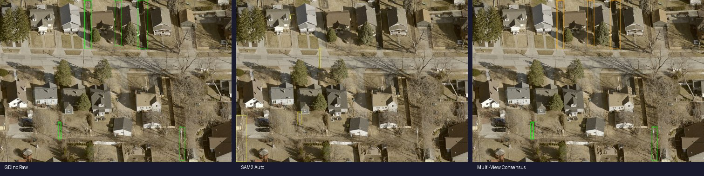
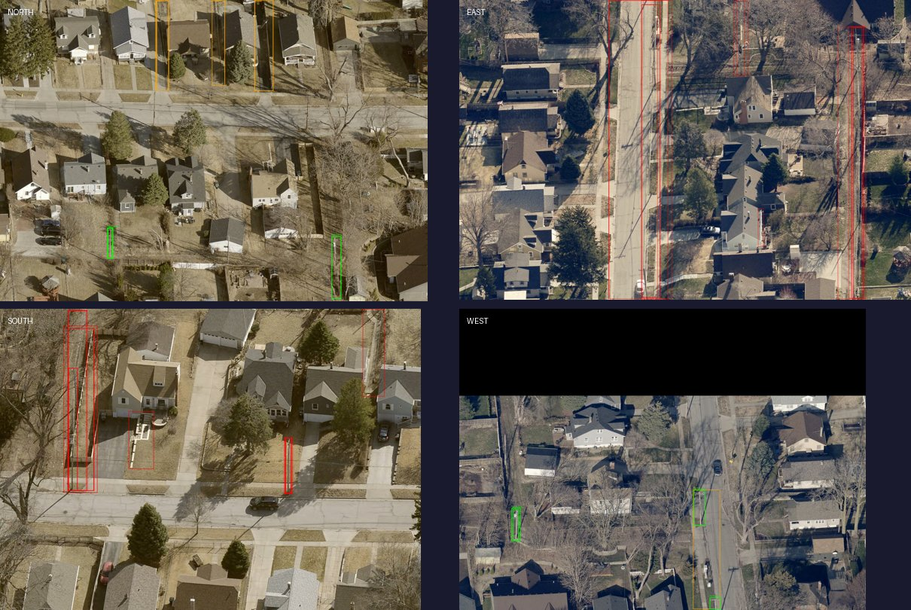

The pipeline combines zero-shot object detection, multi-view 3D reconstruction, and vision-language classification to find utility poles in aerial oblique imagery.
Text prompt: "utility pole. power pole. telephone pole."
Detects candidate poles in each oblique view independently. High recall but low precision on aerial imagery — tree trunks, fence posts, and building edges get detected as poles.

MASt3R computes dense 3D correspondences between all 4 oblique views. For each detection, we project its 3D point into the other views — if another detection exists at that projected location, the views agree.
Key insight: Real poles are visible from all angles and map to the same 3D point. False positives (tree trunks, fences) either look different from other angles or don't map to the same location.

Estimate real-world height from bounding box pixel height using camera geometry: height = h_px x GSD / sin(elevation). Reject anything outside 4-50m range. Then cluster nearby 3D detections to merge duplicates of the same physical pole.
Each surviving detection is cropped and sent to Qwen 3.5 for classification: utility pole, streetlight, tree, fence, building edge, or other. Streetlights are the #1 remaining false positive — they survive multi-view consensus and height filtering because they're genuine pole-shaped vertical structures.
Convert detection pixel coordinates to GPS using a hybrid approach: homography from crop geometry (camera azimuth + crop radius) combined with MASt3R 3D point cloud projection. The 3D approach handles oblique perspective distortion better than simple pixel-offset methods.
| Approach | Speed | Precision | Notes |
|---|---|---|---|
| SAM2 auto-generate + filter | 15-135s/img | ~15% | Too slow, catches any tall object |
| GroundingDINO-Tiny (zero-shot) | 1-2s/img | ~25% | Fast but noisy |
| Qwen3-VL 2B grounding | 5-50s/img | Unreliable | Stuck in thinking loops |
| GDino + MASt3R + VLM (ours) | ~30s/loc | ~65% | Multi-view consensus pipeline |